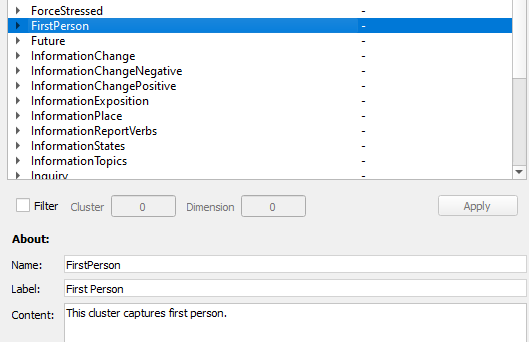

Clusters
Clusters are the highest level of rhetorical categorization.
Clusters act as a broader way to categorize rhetorical patterns. DocuScope organizes patterns first into clusters, which then branch into Dimensions.
An example of a higher-level cluster would be
- First Person
This cluster contains two Dimensions
- Generic First Person
- First Person Interior
These dimensions each contain Language Action Types
Note: 
The Content field in the About: section gives a definition of the rhetorical features of the cluster.